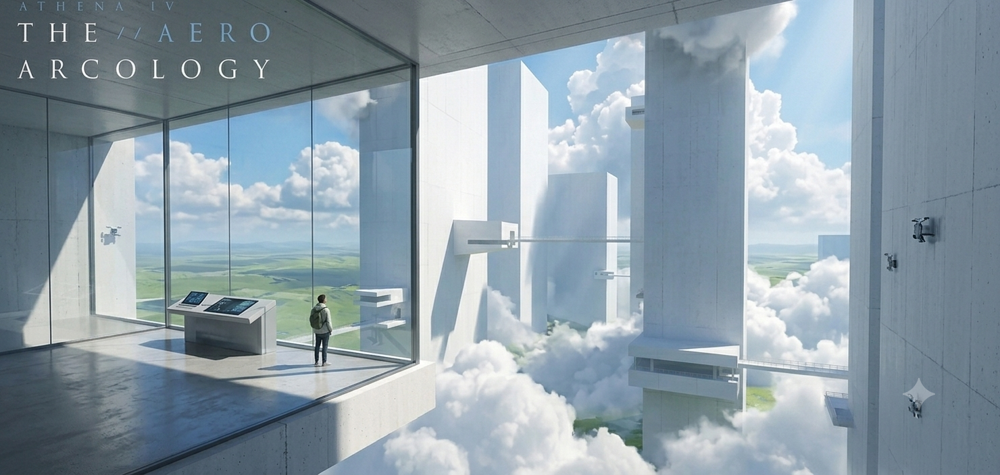
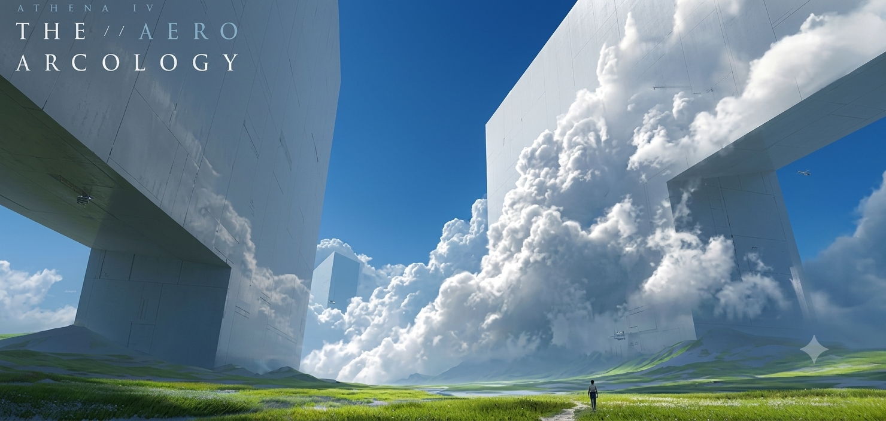
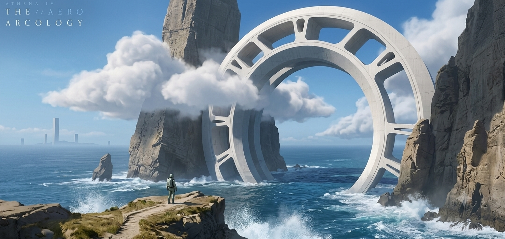
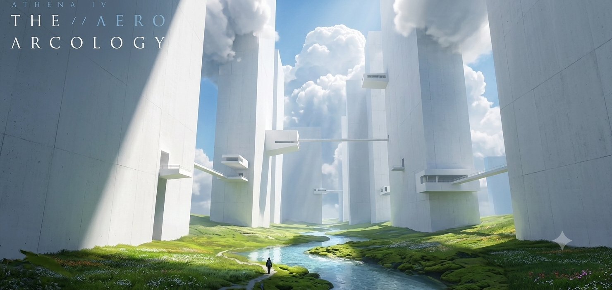
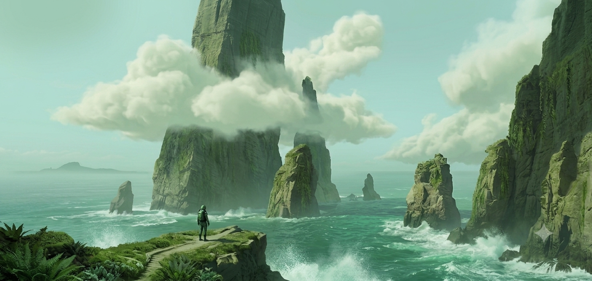

An endless first-person survey of monumental scale. Glide, grapple, and wander through an infinite procedural world where colossal white megastructures pierce the clouds above silent green meadows.
Aero Arcology is not about reaching a destination. It is about the texture of crossing — the humility of standing beneath something that does not notice you.
The world is impossibly large. The player should feel microscopic next to the towering white Arcologies that stretch into the upper atmosphere.
No health bars, no combat, no survival pressure. The challenge lies in navigating vertical spaces and mapping the unknown without threat.
Movement itself must feel satisfying. Running, sliding, climbing, and soaring should feel fluid and momentum-based.
A lonely, contemplative experience. The narrative is told strictly through environmental cues, scale, and soundscapes.
The game world generates endlessly around the player using a seed-based chunk system. Every horizon has never been seen before — and will never be seen again.

Gently rolling green meadows, low hills, and small rivers. Towering isolated pillars and massive sky-bridges break the horizon.

Deep, shadowed chasms with heavy ground-level fog. Interlocking walls block out the sun; a vertical climbing focus with long echoes.
Dry, cracked clay basins and low-growing yellow grass. Half-buried, decaying monoliths lean at extreme angles.

Sky-scraping plateaus that put the player level with cloud decks. Densely packed hollow columns with interconnected pathways.
Each tool extends your reach without ever introducing violence. Movement is the only verb that matters.
A hand-held optical scanner used to identify structure types, measure distance and height, and log unique flora or geological formations.
A deployable physical wing-suit. Falling from massive heights is converted into horizontal flight, letting you sail between towers and drift through clouds.
A tool that anchors to concrete surfaces. Swing across massive hollow interior chasms or pull yourself up sheer vertical walls.
Sliding down steep green hills builds momentum, which can be converted into a massive forward leap. Every slope is an invitation.
Dungeons are enclosed, vertical puzzles found inside the hollow concrete monoliths. Ambient light filters through high skylights, casting dramatic shadows that move with the hour.

Captured during the first survey cycle. Each frame is a coordinate — each coordinate is an invitation to return.